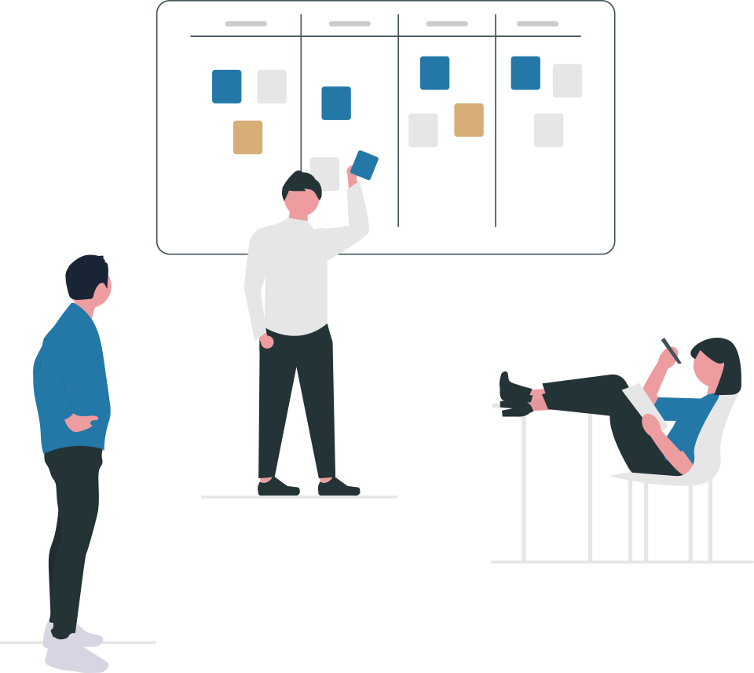

Spontaneous retrieval
線索自然喚回意圖
看見會議通知，想起還缺資料。部分 prospective-memory 情境不需要持續費力監看。
Einstein et al., 2005 ↗A PRACTICAL MODEL OF PROACTIVITY
主動性可以拆解。先理解人，再逐層看到 agent 的觸發、執行、狀態與成果。

線索如何喚回意圖？
什麼讓系統開始？醒來後做什麼？
從已有的架構，看到需要接上的能力。
具體交付什麼？失敗時怎麼證明能恢復？
這是研究的閱讀分類，不是任何單一 framework 宣稱的標準 taxonomy。
01 / HUMAN COGNITION
大腦持續運作。至於「為什麼此刻想起這件事」，還需要看線索、記憶、注意與當下目標。
時間經過是背景；這個念頭可能由內在線索或外在情境喚起。不是證明大腦裡有固定間隔的 cron。
看見會議通知，想起還缺資料。部分 prospective-memory 情境不需要持續費力監看。
Einstein et al., 2005 ↗知道下午要交報告，主動查看時間與進度。監看與自發提取可以並存，依任務而變。
Prospective memory ↗人在持續活動時，仍會出現與眼前工作不同的想法。研究描述神經網路參與，不等同軟體排程器。
Andrews-Hanna et al., 2014 ↗Intake · 接收工作：同事交辦任務後開始處理。OpenClaw Agent loop 使用 intake 描述入口。
Handoff · 移交工作：把工作轉交其他 agent／執行者；本研究 OpenBot 的 Handoff result relay 另有具體回傳路徑。
02 / MECHANISM TAXONOMY
Time / Event 是常見外部喚醒入口。Observation 是工作內容；Agent loop 是 run 內的控制流程。
什麼讓工作開始？
醒來後看見什麼？
讀信、查任務、比較狀態。也可先由程式做變更偵測，再决定是否啟動模型。
Hermes monitor · 實作與限制 ↗這次工作如何往下走？
模型看完結果，再選下一步；也可能停止、等待或受額度限制。一個正在執行的 loop，不必每步都等外部 scheduler。
OpenClaw Agent loop ↗如何接得上、交得出？
記住進度、去重、保留成果、辨識投遞結果。這些決定同事感能否持續，而非只有一次提醒。
Existing task state · 現有實作 ↗| Framework | Native term | 它解決什麼 | Source |
|---|---|---|---|
| OpenClaw | Cron / Heartbeat / on-exit | 排程、定期檢查、完成後觸發；on-exit 是 event 的一種。 | Flow + Code ↗ |
| Hermes | /loop / monitor mode | Session 內重複工作，或先以程式偵測變更；各有停止與持久性範圍。 | Implementation ↗ |
| Grok Bot reconstruction | BackgroundWakes / CompletionRevivals | 背景事件喚醒、子工作完成後恢復。非官方重建證據，不能當成 xAI 官方承諾。 | Flow + Code ↗ |
| OpenBot | Handoff result relay / Lease heartbeat | 交接回傳與租約續期是不同責任；Lease heartbeat 不等於叫醒模型。 | Flow + Code ↗ |
| Voyager | Automatic curriculum / Iterative prompting | 在執行循環中選下一個任務、根據回饋修正；不只是發通知。 | Flow + Code ↗ |
OpenClaw 曾從回覆後的背景 pass 推斷跟進，再交給 Heartbeat。它增加的是「要跟進什麼」的推斷，不是第三種神祕時鐘。抽取與投遞已移除；歷史紀錄不能列為現有能力，也沒有證據可斷言退役原因。
Historical implementation · 歷史來源 ↗03 / ARCHITECTURE IN CONTEXT
從 System context 進入元件，再看原始程式。虛線只表示待整合的提案。
bb7101c3cfca2026-09-11 · Source inspectionSelect a node · 點選圖中元件，右側展開責任與程式碼。
M365 ingress、receipt、task state、runtime adapter 都有實作。OpenClaw 為外部 Runtime Controller；分散式 gateway 仍是 stub。
配置 standing duty，接上持續跟進的業務紀錄與情境驗證。重用既有入口，逐項確認外部版本能力。
04 / CATHAY WORK SCENARIOS
先以內部專案／營運同事為假設。以下是待驗證的情境提案，不是國泰現行作業規範。
LOCAL DEMO · ILLUSTRATIVE POLICY
以會前資料準備示範「觀察 → 判斷 → 動作」。只執行頁面內的明確規則，沒有呼叫模型或寄出訊息。
05 / VERIFICATION & RELIABILITY
Source inspection 證明路徑存在。Scenario verification 才能驗證一件工作是否完成。Production reliability 還需要實際運行的資料。
固定版本程式摘錄、呼叫關係、狀態限制。不能推論已部署。
既有 Hermes AST-extracted 函式 probe 暴露 digest / fingerprint 碰撞；範圍不含 installed runtime、模型或 E2E。
Actual probe results ↗真實 adapter + 測試 provider + 模型／工具，注入失敗並驗證跨回合結果。本次未執行。
觀測延遲、重複投遞率、恢復率、錯誤對象、成本與打擾率。先量 baseline，再訂 SLO。
| Injection | Expected evidence | Integration owner |
|---|---|---|
| Duplicate event Webhook 與 polling 同時到 | 一個工作執行；重複有紀錄。另驗證外部投遞，不能只看 receipt。 | M365 ingress / receipts |
| No change / stale input 資料不變或已過期 | 無必要通知；舊 snapshot 不當作即時證據。 | Observation / policy |
| Read failure 工具逾時或權限不足 | 狀態為未知／失敗；不能把讀不到當作沒有資料。 | Tool result / task state |
| Crash / restart 處理中重新啟動 | 恢復可重試工作；已做的副作用不重複。逐一測 crash point。 | Runtime / durable state |
| Delivery failure 產物完成、通知失敗 | 保留待投遞成果；不因 observed receipt 而丟失交付。 | Artifact / delivery |
| Cancellation / changed request 使用者取消或改方向 | 舊任務不再續問或送出；新要求有自己的版本與驗收標準。 | Task guards / follow-up |
| Scope / budget 錯對象、額度耗盡 | 拒絕越權投遞；到額度上限停止並留下原因。 | Admission / runtime policy |
以上 Expected evidence 是 proposed acceptance criteria，尚不是實際測試通過清單。
Interaction · 再看這些機制如何形成同事感 →